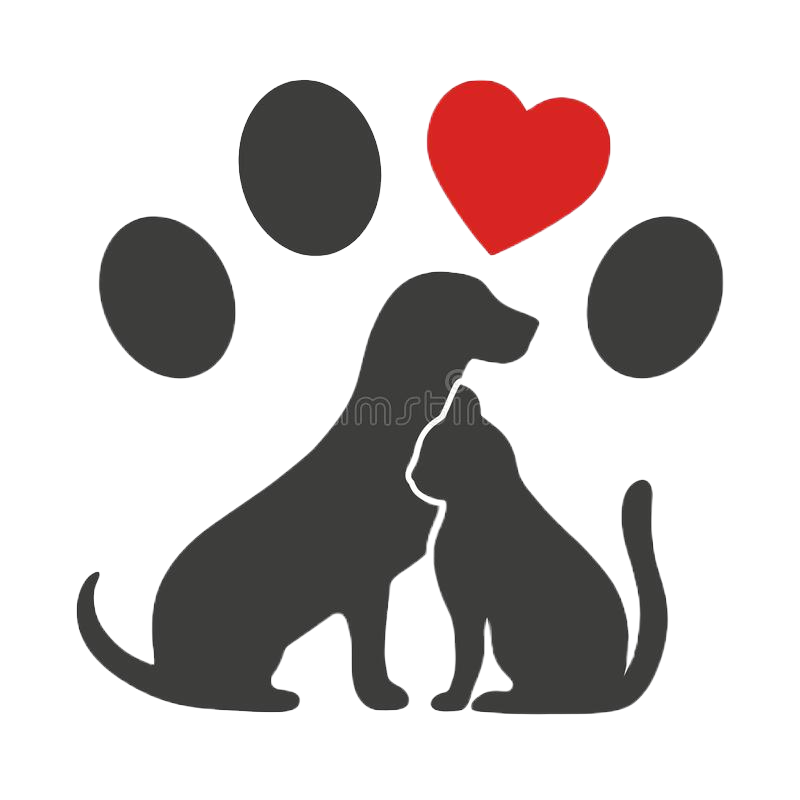

Grupo de Asistencia, Rescate y Readaptación Animal.
Somos un voluntariado rescatistas de animales en situación de calle. Nuestro fin es poder ayudar a los que no tienen voz. Miles de ciudades cuentan con animales abandonados en la calle, en situaciones como desnutrición, sin vacunas, preñados, etc. Nuestro deseo es que esto termine, poder darle un hogar y una vida llena de amor a cada uno de estos animalitos.
